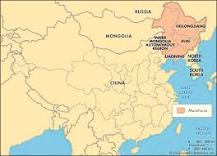

The Amur leopard is a leopard subspecies native to the Primorye region of southeastern Russia and northern China. It is listed as Critically Endangered on the IUCN Red List, as in 2007, only 19-26 wild leopards were estimated to survive in southeastern Russia and northeastern China.
Amur leopards are probably the rarest big cat in the world.
But the Amur Leopard population in the wild seems to be stable and increasing.
They have spots like fingerprints.
They own both a summer and winter wardrobe.
They can get chilly in the mountains.
They are now only found in the border areas between the Russian Far East and north-east China, and possibly North Korea. Most Amur leopards are in Russia, with a few in China. Their range is smaller than 2,500 sq km—that's an area smaller than Dorset.
